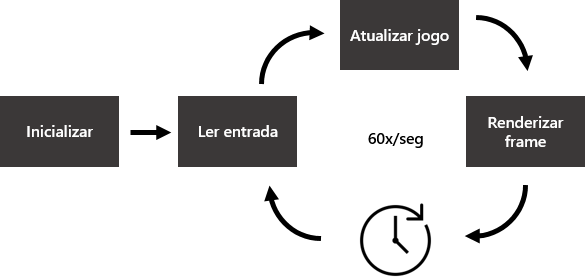

init();
while (true)
{
var start = getCurrentTime();
processInput();
update();
render();
sleep(start + MS_PER_FRAME - getCurrentTime());
}//modelo
var x = 0;
var speed = 5;
//renderização da cena
function processingCode(processing) {
processing.draw = function() {
processing.background(0);
processing.ellipse(x, 250, 50, 50);
};
processing.setup = function() {
processing.size(500, 500);
processing.noStroke();
};
}
//executado a cada game loop
function update() {
x += speed;
if (speed > 0 && x > 500) {
speed *= -1.01;
} else if(speed < 0 && x < 0){
speed *= -1.01;
}
}
//inicia o processingJS
new Processing($('#exemplo-1')[0], processingCode);
//executa update 60 vezes por segundo
setInterval(update, 1000/60);